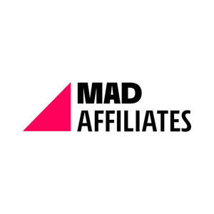

Trade Mark Journal No.2026/009 27 February 2026
UK00004310344 15 December 2025 (35,41,42)

- Class 35
- Targeted marketing; Search engine optimisation for sales promotion; Development of advertising concepts; Pay per click advertising; Lead generation services; Price comparison services; Providing user reviews for commercial or advertising purposes; Web indexing for commercial or advertising purposes; Marketing; Marketing research; Market intelligence services; Competitive intelligence services; Business research; Professional business consultancy; Business management assistance; Commercial administration of the licensing of the goods and services of others; Compilation of information into computer databases; Updating and maintenance of data in computer databases.
- Class 41
- Gambling services; Online gambling services; Providing casino facilities [gambling]; Organization of lotteries; Providing amusement arcade services; Providing information in the field of entertainment. .
- Class 42
- Computer programming; Computer software design; Computer system design; Software as a service [SaaS]; Platform as a service [PaaS]; Hosting computer websites; Server hosting; Rental of web servers; Development of computer platforms; Development of video and computer games; Technological consultancy; Creating and maintaining websites for others; Installation of computer software; Maintenance of computer software; Updating of computer software; Computer system analysis; Computer virus protection services; Data encryption services; Electronic data storage; Research and development of new products for others.
Marsafaro Technologies Company Limited
Representative: DRAPII SKLIAROV SOLUTIONS LLP